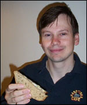

|
Vegetarian
Andrew Powell conjured up a culinary winner when he went looking
for a cookery course.
He
spotted a competition on the Vegetarian Society's website for a
gourmet veggie sandwich - and his inventive recipe beat hundreds
of entries from all over Britain to scoop first prize.
Andrew
really got the judges' tastebuds tingling with his innovative recipe
called Mushroom Bonanza which combines mushrooms, fenugreek seeds
and yogurt on a bed of chicory.
The
lifelong vegetarian said: "I was looking for a vegetarian cookery
school when I saw the competition.
|  |
| Andrew
Powell and his awardwinning sandwich. |
|
"I
think vegetarian sandwiches can be as exciting as meat-based sandwiches
and had an idea so I thought I'd give it a go.
"I
didn't dream I would get first prize. It's the first competition
I have ever won."
Andrew,
a 36-year-old computer expert who shares the cooking at home with
his fiancee Susana, won the perfect prize - a day course at the
Vegetarian Society's celebrated Cordon Vert Cookery School.
Despite
his success Andrew has no plans to switch to a career in the catering
business, but admits he would love it if his invention was added
to the menu of Gloucestershire sandwich outlets.
Competition
judge Christine Walker, manager of the Cordon Vert Cookery School,
said: "On reading the ingredients I instantly wanted to make
the sandwich."
The
BBC Gloucestershire web team also voted it a winner - so here's
the recipe if you would like to try it yourself.
Mushroom
Bonanza
Ingredients:
1 clove garlic, 1 tsp fenugreek seeds, olive oil, 100g field
mushrooms, 100g chanterelle mushrooms, a handful of breadcrumbs,
Greek yogurt (enough to mix and cover mushrooms), butter, malted
granary bread, 1 head chicory, 1 tsp sunflower seeds, salt and black
pepper to taste.
Method:
Chop garlic finely and fry over low heat with fenugreek seeds in
olive oil for two minutes. Add mushrooms and fry on medium heat
until soft. Add salt to release juices. Blend in food processor
with breadcrumbs and yoghurt. Butter bread and cover with chicory
leaves, sprinkle with sunflower seeds and add mushroom mixture and
black pepper. Enjoy!
Do
you have a recipe you would like to share with BBC Gloucestershire's
readers? Or a cookery headache you would like our online chef to
solve? Get in touch here.
|